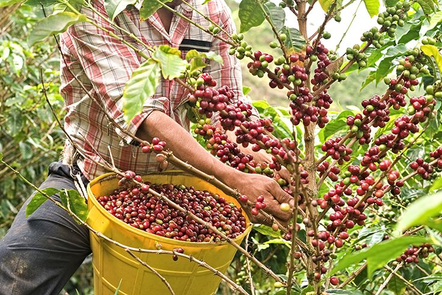

Welcome to Green Hills Coffee Plantation, where quality, passion, and the rich tradition of coffee come together. We are dedicated to bringing coffee lovers a memorable experience through carefully selected coffee beans, rich aromas, and exceptional flavor. Inspired by Kenya’s world-renowned coffee culture, our goal is to celebrate every cup by delivering freshness, quality, and a warm, welcoming atmosphere for our customers. Why Choose Us? At Green Hills Coffee Plantation, we believe that great coffee is more than just a drink — it is an experience. We focus on quality, excellent customer service, and attention to detail to ensure every cup meets your expectations. Whether you enjoy a strong morning brew, a smooth afternoon coffee, or a relaxing moment with friends, we strive to provide the perfect blend of taste, comfort, and satisfaction. Our commitment to consistency and customer happiness makes us a great choice for anyone who appreciates good coffee. Our History and Locations in Nairobi Inspired by Kenya’s proud coffee-growing heritage, Green Hills Coffee Plantation celebrates the journey of coffee from the farm to the cup. Our vision is to share the beauty of Kenyan coffee culture while building lasting relationships with our customers and community. We aim to make quality coffee accessible to coffee lovers across Nairobi, with a focus on convenient locations and a welcoming environment. Whether you are visiting us for your daily coffee or meeting friends for a refreshing break, Green Hills Coffee Plantation welcomes you to enjoy the taste and spirit of Kenyan coffee. A small suggestion: I couldn’t verify official Nairobi branches for Green Hills Coffee Plantation, so the location wording above is intentionally general. Before publishing, add your actual branch names, addresses, phone number, and founding year if available. I found other Nairobi-area coffee businesses, but I wouldn’t want to list their locations as yours.
